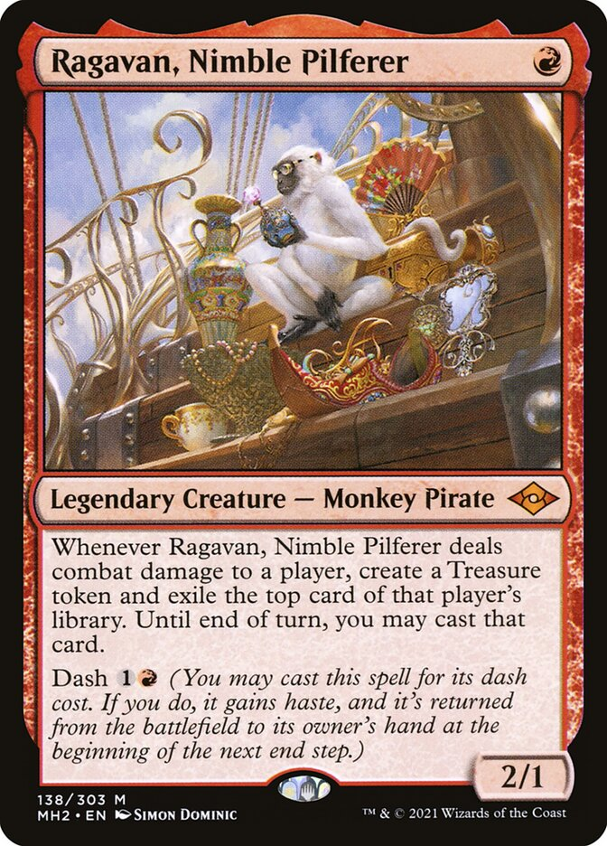

Foil a caldo (Hot Stamping)
Una lamina metallica (oro, argento, olografica) viene trasferita sulla carta tramite una placca riscaldata a 180–220°C con pressione controllata. Il metallo aderisce solo nelle zone trattate con resina speciale.
Ologrammi, foil metallici e texture in rilievo — le tecniche che trasformano una carta in un oggetto d'arte
Una carta foil non è solo più bella: è fisicamente diversa. La finitura metallizzata aggiunge peso, spessore e una risposta tattile inconfondibile. Per il collezionista, aprire una busta e sentire quella texture sotto le dita è un'esperienza sensoriale progettata nei minimi dettagli.
Le case produttrici brevettano le proprie tecniche di finitura: il "Rainbow Foil" di Pokémon, il "Foil-Etched" di Magic e il "Parallel Rare" di Yūgiōh sono tutti processi industriali protetti da proprietà intellettuale.
Ogni tecnica richiede macchinari dedicati e aumenta significativamente il costo di produzione per carta.
Una lamina metallica (oro, argento, olografica) viene trasferita sulla carta tramite una placca riscaldata a 180–220°C con pressione controllata. Il metallo aderisce solo nelle zone trattate con resina speciale.
Una pellicola olografica pre-incisa viene laminata a freddo sull'intera superficie. Il pattern prismatico — che può essere un reticolo, stelle o simboli specifici del brand — è inciso laser sulla matrice di produzione.
Tecnica esclusiva di Wizards of the Coast: la superficie metallizzata viene incisa chimicamente con acido per creare aree opache in contrasto con quelle lucide. Il risultato è una texture parziale molto ricercata.
Il foil arcobaleno Pokémon usa un pattern lenticolare a microprisme che scompone la luce in spettri colorati diversi a seconda dell'angolo. È visibile solo sulle carte Ultra Rare e Secret Rare.
Verniciatura UV applicata selettivamente: alcune aree brillano intensamente mentre il resto della carta rimane opaco. Usata nelle carte Cuphead per far emergere dettagli specifici dell'illustrazione.
Pressione meccanica con matrici in negativo/positivo crea rilievi tridimensionali. Il bordo della cornice, il testo del nome o il simbolo di espansione possono essere resi in rilievo tattile.
Non tutti i franchise usano le stesse tecniche — ogni universe ha sviluppato il proprio linguaggio visivo delle rarità.
Queste carte sono esempi eccellenti di come una finitura speciale possa trasformare un oggetto di gioco in un pezzo da collezione.

